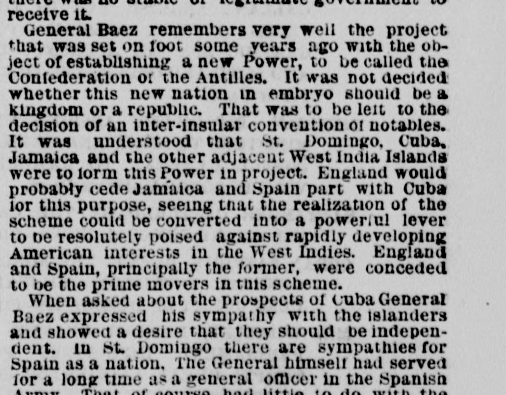
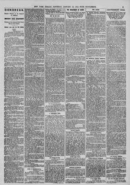

See the full pageVer la página completaHiat was set on loot some years ago with the obiectEsto fue puesto sobre el botín hace algunos años con el objeto
The New York Herald reported on a past scheme led primarily by England and Spain to establish a new power called the Confederation of the Antilles, which would unite St. Domingo, Cuba, Jamaica, and other West India islands to counter rapidly developing American interests. According to the article, General Báez expressed sympathy for the islanders' independence and noted that while St. Domingo harbored sympathies for Spain, Cubans living in St. Domingo opposed his government because he refused to violate neutrality laws by fitting out expeditions against Spain.El New York Herald informó sobre un proyecto anterior encabezado principalmente por Inglaterra y España para establecer una nueva potencia denominada la Confederación de las Antillas, la cual uniría a Santo Domingo, Cuba, Jamaica y otras islas de las Antillas para contrarrestar el rápido crecimiento de los intereses estadounidenses. Según el artículo, el general Báez expresó simpatía por la independencia de los isleños y señaló que, si bien Santo Domingo albergaba simpatías hacia España, los cubanos residentes en Santo Domingo se oponían a su gobierno porque se negaba a infringir las leyes de neutralidad pertrechando expediciones contra España.
FULL TEXT:TRADUCCIÓN:
are only leased, at a specified rent, for a term of years. But if the present provisional government should succeed in establishing itself it will only be glad to receive the yearly rent of $150,000 which the Samana Bay Company are paying for the rights that they have acquired.solo están arrendados, a una renta especificada, por un término de años. Pero si el presente gobierno provisional lograra establecerse, solo se alegrará de recibir la renta anual de $150,000 que la Compañía de la Bahía de Samaná está pagando por los derechos que ha adquirido.
As to the probabilities of who may be called to the Presidential chair, General Baez thinks that Caceres has at present the best chance. He says that the new men in power dare not come before the people to ask their suffrages, for then there is no doubt he would be recalled at once.En cuanto a las probabilidades de quién pueda ser llamado a la silla Presidencial, el general Báez piensa que Cáceres tiene al presente la mejor oportunidad. Dice que los nuevos hombres en el poder no se atreven a presentarse ante el pueblo para pedir sus sufragios, pues entonces no hay duda de que él sería llamado de vuelta de inmediato.
Another cause of trouble to Baez was the opposition which he suffered from the Haytiens because of his friendship for the United States. In Hayti there is a law which prohibits white men from holding or becoming possessed of real estate, and the people of that black Republic think that if Americans once got a foothold on the lovely and fertile island of St. Domingo the colored race would go to the wall. Had Baez determined upon using force to maintain himself in power (which, he asserts, might easily have been done), the worst passions of the people belonging to both Republics would have been appealed to by such freebooters and bandits as Luperon, and a sanguinary war must have ensued. The Dominicans like foreigners, especially Americans; while the Haytiens abhor all white men, particularly those of the United States.Otra causa de problemas para Báez fue la oposición que sufrió de los haitianos debido a su amistad con los Estados Unidos. En Haití hay una ley que prohíbe a los hombres blancos poseer o llegar a poseer bienes raíces, y el pueblo de esa República negra piensa que si los estadounidenses alguna vez obtuvieran un punto de apoyo en la encantadora y fértil isla de Santo Domingo la raza de color iría a la ruina. Si Báez hubiera determinado usar la fuerza para mantenerse en el poder (lo cual, afirma, podría haberse hecho fácilmente), las peores pasiones del pueblo perteneciente a ambas Repúblicas habrían sido invocadas por filibusteros y bandidos como Luperón, y una guerra sanguinaria habría tenido que seguirse. A los dominicanos les gustan los extranjeros, especialmente los estadounidenses; mientras que los haitianos aborrecen a todos los hombres blancos, particularmente los de los Estados Unidos.
About the ability of the Samana Bay Company to comply with the conditions of their contract there appears to be no doubt. Last year the company paid up the yearly rent of $150,000 for which the bay and its dependencies are leased. This term the rent has not been delivered over because there was no stable or legitimate government to receive it.Acerca de la capacidad de la Compañía de la Bahía de Samaná para cumplir con las condiciones de su contrato parece no haber duda. El año pasado la compañía pagó la renta anual de $150,000 por la cual la bahía y sus dependencias están arrendadas. Este período la renta no ha sido entregada porque no había un gobierno estable o legítimo para recibirla.
General Baez remembers very well the project that was set on foot some years ago with the object of establishing a new Power, to be called the Confederation of the Antilles. It was not decided whether this new nation in embryo should be a kingdom or a republic. That was to be left to the decision of an inter-insular convention of notables. It was understood that St. Domingo, Cuba, Jamaica and the other adjacent West India Islands were to form this Power in project. England would probably cede Jamaica and Spain part with Cuba for this purpose, seeing that the realization of the scheme could be converted into a powerful lever to be resolutely poised against rapidly developing American interests in the West Indies. England and Spain, principally the former, were conceded to be the prime movers in this scheme.El general Báez recuerda muy bien el proyecto que fue puesto en pie hace algunos años con el objeto de establecer una nueva Potencia, a llamarse la Confederación de las Antillas. No se decidió si esta nueva nación en embrión debería ser un reino o una república. Eso se dejaría a la decisión de una convención interinsular de notables. Se entendía que Santo Domingo, Cuba, Jamaica y las demás Islas de las Indias Occidentales adyacentes formarían esta Potencia en proyecto. Inglaterra probablemente cedería Jamaica y España se desprendería de Cuba para este propósito, viendo que la realización del plan podría convertirse en una poderosa palanca para ser resueltamente contrapuesta a los intereses estadounidenses en rápido desarrollo en las Indias Occidentales. Inglaterra y España, principalmente la primera, se concedía que eran los principales promotores de este plan.
When asked about the prospects of Cuba General Baez expressed his sympathy with the islanders and showed a desire that they should be independent. In St. Domingo there are sympathies for Cuba as a nation. The General himself had served for a long time as a general officer in the Spanish army. That, of course, had little to do with the intrinsic merits of the Cuban question. The Cubans who live in St. Domingo were opposed to the government because he did not give them the means to fit out expeditions against Spain. They urged him to go to Cuba in person. He could not accede to such demands. They would bring about a gross violation of the neutrality laws, which St. Domingo could not afford to break. The United States, one of the most powerful countries in the world, has observed a strict and honorable neutrality as between Cubans and Spaniards;Cuando se le preguntó acerca de las perspectivas de Cuba, el general Báez expresó su simpatía con los isleños y mostró un deseo de que fueran independientes. En Santo Domingo hay simpatías por Cuba como nación. El propio General había servido por mucho tiempo como oficial general en el ejército español. Eso, por supuesto, tenía poco que ver con los méritos intrínsecos de la cuestión cubana. Los cubanos que viven en Santo Domingo se oponían al gobierno porque no les daba los medios para equipar expediciones contra España. Lo urgieron a ir a Cuba en persona. No pudo acceder a tales demandas. Traerían una violación grosera de las leyes de neutralidad, que Santo Domingo no podría permitirse romper. Los Estados Unidos, uno de los países más poderosos del mundo, ha observado una neutralidad estricta y honorable entre cubanos y españoles;
The New York Herald. New York, January 24, 1874.
See the original at the Library of CongressVer el original en la Biblioteca del Congreso
Also published as the New York Daily HeraldTambién publicado como New York Daily Herald
Published by: James Gordon BennettPublicado por: James Gordon Bennett
Edition: Morning Edition (Edition 1)Edición: edición de la mañana (edición 1)
Page: 3Página: 3
Frequency: daily (1840–1920)Frecuencia: diario (1840–1920)
Collection: Chronicling America, Library of CongressColección: Chronicling America, de la Biblioteca del Congreso
LCCN: sn83030313LCCN: sn83030313
ISSN: 2474-3224ISSN: 2474-3224
OCLC: 9467138OCLC: 9467138
Call Number: Newspaper E457.5 .N3Signatura (Call Number): Newspaper E457.5 .N3
Rights: public domain, according to the Library of CongressDerechos: dominio público, según la Biblioteca del Congreso